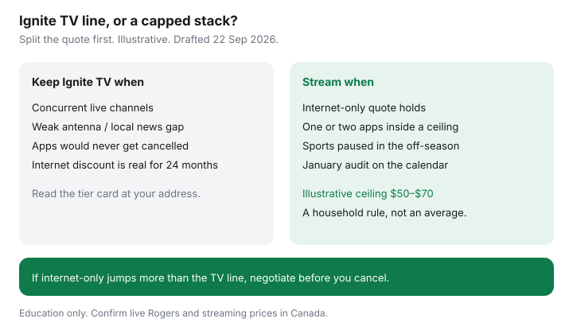

Internet · Canada
Rogers Ignite TV vs Streaming in Canada: When the App Tier Still Makes Sense
Rogers Ignite TV sits on the same fibre or cable plant as Ignite Internet. Households keep the TV tier by default while Netflix, Disney+, sports apps, and a news login quietly rebuild the old cable bill. The question is not “is streaming cheaper in theory.” It is whether your Ignite TV line still buys live channels you open, or whether a capped streaming stack plus a negotiated internet-only rate wins for 24 months. This is a cost framework for middle-aged Canadian homes. It is not a channel guide and not a Rogers offer.
Disclosure: Education only. Rogers Ignite, other ISP television products, and streaming services are offer types. Saving Optimizer does not claim a live partnership with Rogers or any streaming brand. Figures that are not tied to a live checkout are labelled illustrative. Confirm Canadian prices; U.S. stickers are the wrong catalogue.
Key takeaways
- Split the quote: internet rate, Ignite TV tier, equipment, and credits with end dates. If Rogers will not split the lines, you do not have a number.
- App-only or thin Ignite tiers are a different product from a full live package. Read the channel card for your address.
- Build a streaming cost cap before you cancel TV. This guide uses an illustrative $50 to $70 monthly ceiling for a middle-aged household — a rule you set, not a market average.
- Ignite TV still wins when concurrent live sports, local news, and French or specialty channels would force three paid apps that never pause.
- Cord-cut pitfalls: internet-only rate jumps, box return fees, and sports apps that bill in July. Audit every January beside the internet promo cliff.
Ignite TV app tiers vs full cable packaging
Ignite TV is delivered over your home internet connection. Marketing often blends “Ignite” as one brand for internet, TV, and Wi-Fi pods. For money decisions, force three rows on paper:
- Internet only — download, upload, modem or gateway rental, any mid-contract hike date.
- TV tier — app-only, starter, or fuller Ignite TV packaging at your postal code, plus set-top or voice remote rental if any.
- Credits — which line they attach to, and the month they end. A “bundle save” that dies in month 13 is not a permanent discount.
App-centric tiers can look like streaming with a Rogers login. Fuller packaging still behaves like live television: many concurrent channels, guide, and recordings. Do not compare a thin app tier’s sticker to a neighbour’s classic cable bill and call it the same product. Use the same civic address for every quote, the same way you would for a Rogers vs Bell internet check.

Build a streaming stack cost cap for sports and news
List what the household actually opens in a normal week. For most middle-aged homes the list is short: local or national news, one sports league in season, and one general catalogue. Price replacements in Canadian dollars only.
| Need | Where to look first | Your monthly |
|---|---|---|
| Local / national news | OTA where the antenna works; CBC Gem and other broadcaster apps | Often $0 to low |
| One sports league | Canadian rights holder’s app, paused in the off-season | Write live price |
| Series and movies | One general streamer at a time inside the ceiling | Inside the cap |
| Ignite TV line you would drop | From the split quote, after credits | Write the number |
If sports plus one streamer already exceeds the Ignite TV line and internet-only does not jump, keep the thin TV tier. Streaming is optional. Overpaying for logos you will not open is not. The longer cord-cut stack lives in the cut-cable guide.
When Ignite TV still wins for live channels
Keep or renegotiate Ignite TV when any of these are true:
- Three or more people need different live channels at the same time and apps cannot share that cleanly.
- Local news reception is poor in a concrete condo and broadcaster apps are incomplete for what you watch.
- French live television or specialty packs would require overlapping Québec and English apps that never get cancelled.
- The Ignite TV surcharge is small relative to the internet discount it unlocks — but only if you verified internet-only without TV and the discount is real for 24 months.
If the only reason you keep TV is “it came with the modem,” that is inertia, not a win. Ask retention for internet-only with a competitor quote in hand. Use the Rogers winback script and refuse a thicker package as the only offer.
Cord-cut pitfalls that erase internet savings
- Internet-only cliff. The bundle discount was protecting a high internet rate. Cancelling TV without a written internet-only rate can raise the line by more than the TV cost.
- Equipment returns. Ignite boxes and remotes have return deadlines and non-return charges. Treat them like a modem return with a receipt.
- Sports apps that never pause. A season pass that bills twelve months is a cable pack with worse customer service.
- Wi-Fi blame. Buffering after you cut TV is often rental pods or a dead zone, not proof you needed Ignite TV. See mesh vs rental pods before you restore the package.
- Activation or change fees. CRTC 2026-43 (in force 12 Jun 2026) bans many activation and modification fees when no technician visit is required. A truck roll or gear non-return is a different line. Read the fee guide if a junk charge appears.
Annual audit of subscriptions
Put a January calendar note beside the month your internet credits end. Same week:
- List every streaming and Ignite charge on the last two bills.
- Cancel what nobody opened in 30 days; pause sports that are out of season.
- Re-quote internet-only versus Ignite TV + internet for 24 months at the address.
- If a new bundle is honestly cheaper and you want the channels, take it on purpose — not by accident.
The household that saves can name three numbers: internet, television (Ignite or apps), and the month the credits die.
Decision table: Ignite TV vs streaming-only
| Situation | Lean toward | Why |
|---|---|---|
| One or two apps, sports in season only, solid OTA or news apps | Streaming-only + internet quote | Ceiling stays under a typical TV line if internet-only holds |
| Concurrent live channels, weak antenna, overlapping specialty needs | Keep a thin Ignite TV tier | Apps multiply and never cancel cleanly |
| Internet-only jumps more than TV costs | Negotiate before you cancel | Winback or competitor first; cutting TV alone is not a save |
| Promo cliff next month on internet and TV together | Seven-day plan | See the promo playbook |
Sources & date stamps
- $50–$70 streaming ceiling — illustrative household rule for this guide, 22 Sep 2026, not a measured Canadian average.
- CRTC 2026-43 activation and modification fee ban — in force 12 Jun 2026; re-read context 22 Sep 2026. Technician and non-return charges can remain.
- Ignite TV tier names and channel cards change by address — confirm on Rogers’ live quote. No national sticker claimed here.
- Bundle unbundle mechanics — see the bundles guide dated cards; do not reuse another province’s mobility credit as your number.
Frequently asked questions
Is Ignite TV the same as a full Rogers cable package?
No. Ignite TV is an IPTV / app product on your internet line. App-only or thin tiers are not the same as a full classic cable lineup. Read the channel list and the equipment line on the quote before you treat them as one product.
When does streaming beat Ignite TV on cost?
When the household will open one or two paid services, pause sports in the off-season, and keeps internet-only from rising by more than the TV line. If internet-only jumps and you rebuild four apps, you have not saved.
Do I need gigabit internet to stream instead of Ignite TV?
Usually no. Two high-definition streams and a call fit a mid-tier plan if Wi-Fi reaches the rooms. Check upload for video calls. See the speed worksheet before you let a winback sell a tier you cannot use.
What about live sports and local news?
Price the Canadian rights apps for the leagues you watch, in season only. For local news, try over-the-air or broadcaster apps first. A full Ignite pack can still win if three people need concurrent live channels that apps do not cover cleanly.
Is this a Rogers partnership?
No. ISP and streaming brands are offer types. Confirm live Canadian prices. Education only.